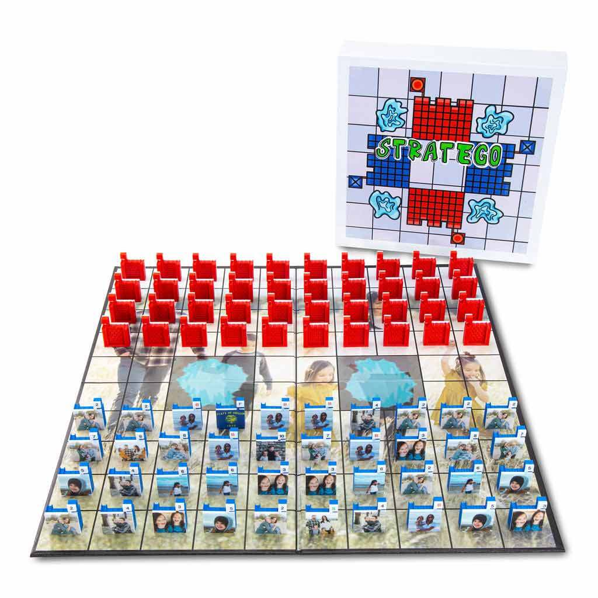
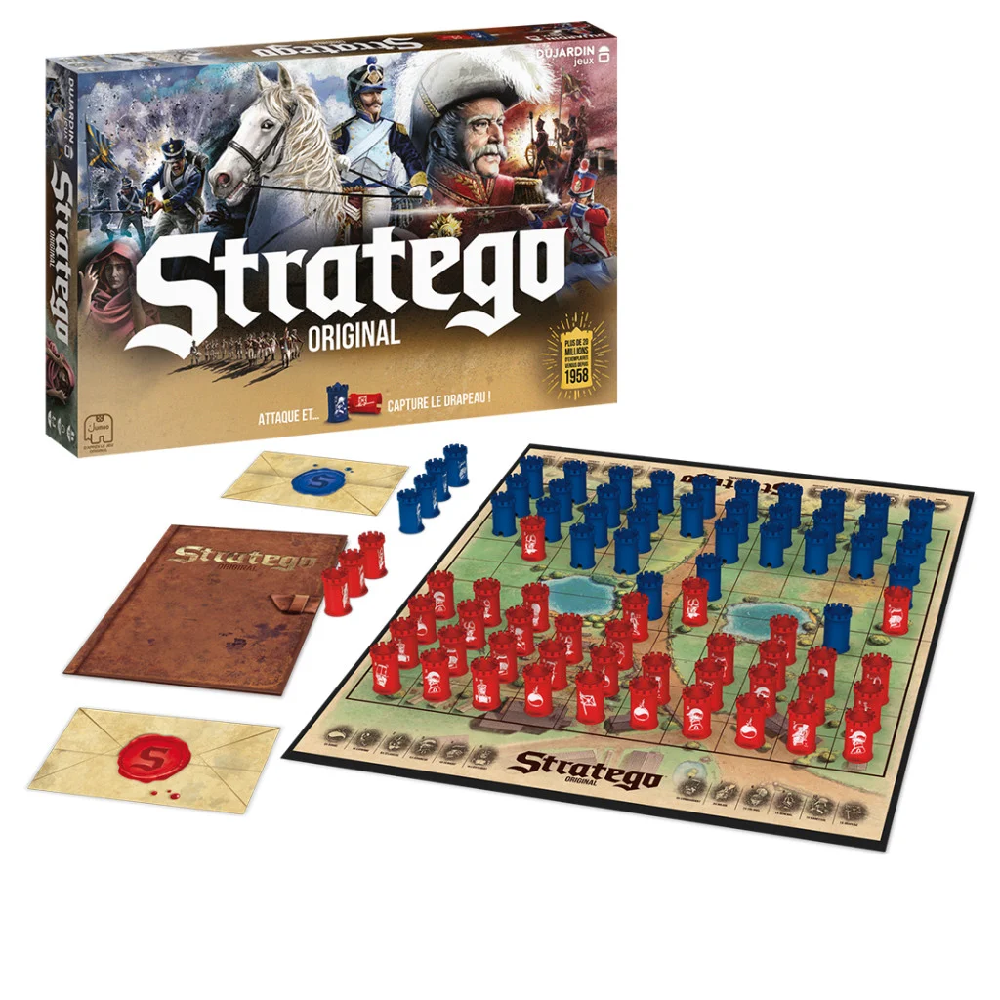

Stratego
Stratego is from the French or Greek strategos (var. strategus) for leader of an ancient
(especially Greek) army; first
general. The origins of Stratego can be traced back to traditional Chinese board game
"Jungle" also known as "Game of the
Fighting Animals" (Dou Shou Qi) or "Animal Chess". The game Jungle also has pieces (but of
animals rather than soldiers)
with different ranks and pieces with higher rank capture the pieces with lower rank. The
board, with two lakes in the
middle, is also remarkably similar to that in Stratego.


About Stratego
Stratego is a strategy board game for two players on a board of 10×10 squares. Each player
controls 40 pieces
representing individual soldier ranks in an army. The objective of the game is to find and
capture the opponent's Flag,
or to capture so many enemy pieces that the opponent cannot make any further moves. Players
cannot see the ranks of one
another's pieces, so disinformation and discovery are important facets to gameplay. The
modern game of Stratego, with its Napoleonic imagery, was originally manufactured in the
Netherlands by Jumbo.
Pieces were originally made of printed cardboard. After World War II, paintedwood pieces
became standard. The game was
licensed by the Milton Bradley Company for American distribution, and introduced in the
United States in 1961 (although
it was trademarked in 1960).
Starting in the late 1960s all versions switched to plastic pieces. The change from wood to
plastic was made for
economical reasons, as was the case with many products during that period, but with Stratego
the change also served a
structural function: Unlike the wooden pieces, the plastic pieces were designed with a small
base. The wooden pieces had
none, often resulting in pieces tipping over. This, of course, was disastrous for that
player, since it often
immediately revealed the piece's rank, as well as unleashing a literal domino effect by
having a falling piece knock
over other pieces. European versions introduced cylindrical castle-shaped pieces that proved
to be popular. American
variants later introduced new rectangular pieces with a more stable base and colorful
stickers, not images directly
imprinted on the plastic.